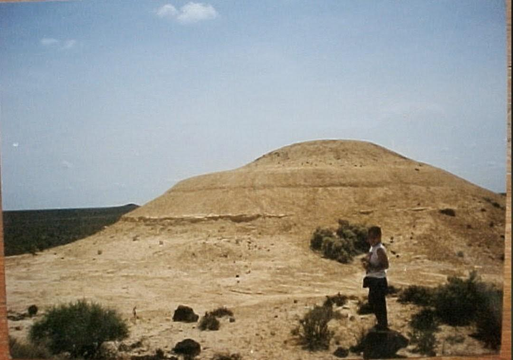
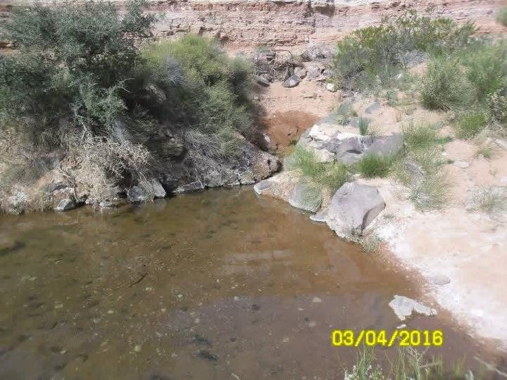
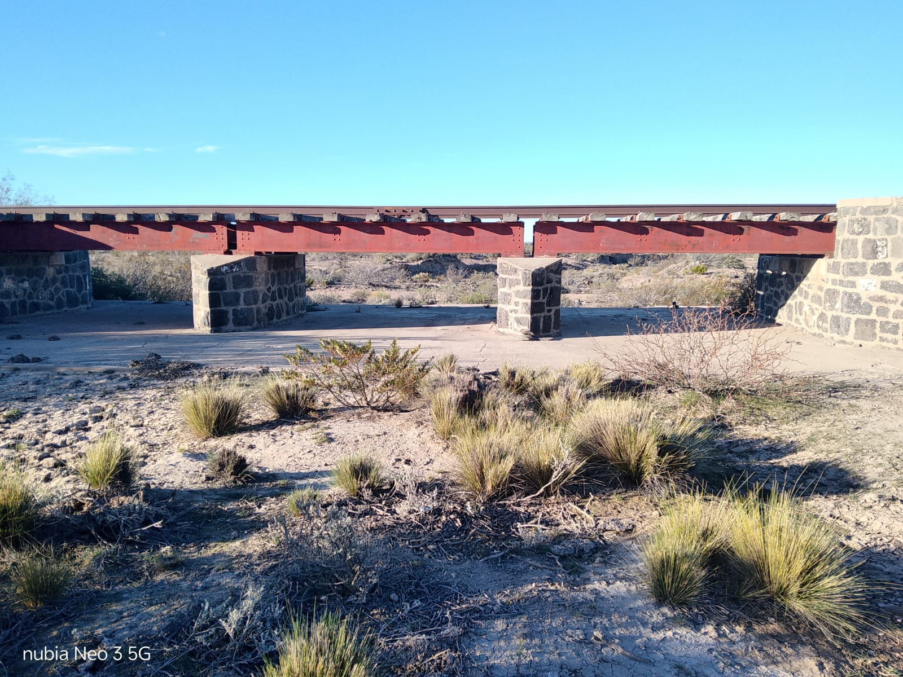

¿Conocés los rincones más lindos de Aguada Cecilio? El cerrito amarillo, el manantial que dio origen al paraje y un puente donde se comparte la tarde: tres postales que muestran la riqueza de la Línea Sur.
El Cerrito Amarillo
Una de las mejores vistas es la del Cerrito Amarillo, uno de los 5 cerritos amarillos de Argentina. Está compuesto principalmente por rocas sedimentarias calcáreas y areniscas, y la presencia de azufre o limonita (óxido de hierro hidratado) le da ese color tan particular.

La Aguadita
La Aguadita es el manantial natural de agua dulce que dio origen al paraje y convirtió a Aguada Cecilio en un lugar para vivir.

El Puente Colorado
El Puente Colorado es un lugar donde la gente va y disfruta de una tarde hermosa, acompañada de unos mates o un tereré, dependiendo el día. Cuando terminan y se van, dejan grabado su nombre en el puente y todo limpio, para cuidar ese lugar hermoso.
